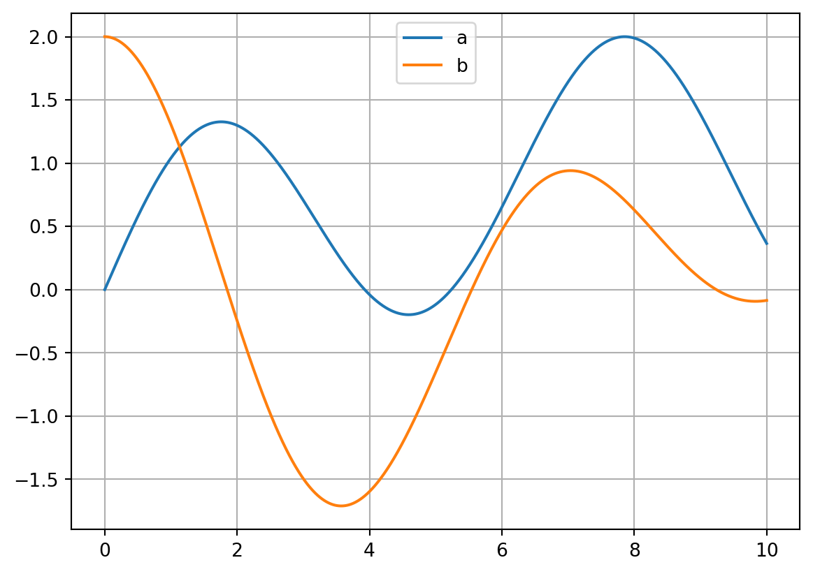

This tutorial introduces the basic data structure of trimes. It covers basic concepts like (re-)sampling, interpolation and slicing. Other tutorials cover more advanced applications.
1 Data Structure
First we create a time series with two curves between 0 and 10 seconds. The time samples are randomly varied (sample time is not constant). This could be for example results of simulations with an adaptive (variable) step solver. Note that there is a separate tutorial where more convenient ways to create time series signals are shown, but we want to illustrate the illustrate the data structure here.
import syssys.path.append(r"..\..\src")import trimesimport numpy as npimport pandas as pdfrom matplotlib import pyplot as pltaverage_sample_time =1e-3time = np.arange(0, 10, average_sample_time)time = time + (np.random.rand(len(time)) -0.5) *1e-5# Make sure that the first time step is zero and the last equals to 10. This is not a generic requirement of trimes, but necessary for this tutorial.time[0] =0time[-1] =10val_a = np.sin(time) + np.sin(time *0.2)val_b = np.cos(time) + np.cos(time *0.7)plt.plot(time, val_a, label="a")plt.plot(time, val_b, label="b")plt.legend(loc="upper center")plt.grid()print("Time samples:")print(time)
Time samples:
[0.00000000e+00 9.99077607e-04 1.99813138e-03 ... 9.99700303e+00
9.99800129e+00 1.00000000e+01]

Let’s create a pandas DataFrame. trimes requires the index to be the time variable. The index can be set at instantiation of the DataFrame or later using set_index.
# Set index at in instantiationdata = {"a": val_a, "b": val_b}df = pd.DataFrame(data, index=time)df.index.name ="time"print("Set index at initialization:")print(df.head())# Set index after instantiationdata = {"time": time, "a": val_a, "b": val_b}df = pd.DataFrame(data)df.set_index("time", inplace=True)print("\nSet index after initialization:")print(df.head())
Set index at initialization:
a b
time
0.000000 0.000000 2.000000
0.000999 0.001199 1.999999
0.001998 0.002398 1.999997
0.002999 0.003599 1.999993
0.004003 0.004803 1.999988
Set index after initialization:
a b
time
0.000000 0.000000 2.000000
0.000999 0.001199 1.999999
0.001998 0.002398 1.999997
0.002999 0.003599 1.999993
0.004003 0.004803 1.999988
2 Getting Data from Transient Time Series
2.1 Get Samples
You can get samples from a DataFrame using the index with the loc method. But the input must be exact. Hence, 0.0 is accepted and returns a pandas Series object because there is a sample at exactly that time. However, 0.55 will throw a key error.
df.loc[0.0] # -> ok, because `0.0` is in df.index# df.loc[0.55] -> KeyError
a 0.0
b 2.0
Name: 0.0, dtype: float64
The get_sample method of trimes returns a pandas Series object with the next sample after the queried time:
trimes.get_sample(df, 0.0) # -> same as df.loc[0.0]trimes.get_sample(df, 0.55)
a 0.633519
b 1.778535
Name: 0.5510019861223341, dtype: float64
get_sample and get_sample_shifted accept multiple samples and then return a DataFrame. get_sample_shifted shifts the returned samples. For example the input -1 returns the samples before the sample time:
trimes.get_sample_shifted(df, [0.55, 2], -1)
a
b
time
0.549997
0.632462
1.779325
1.999005
1.298946
-0.244588
You can also query samples around a point in time:
trimes.get_samples_around(df, 0.55, -1, 2)
a
b
time
0.549997
0.632462
1.779325
0.551002
0.633519
1.778535
0.552004
0.634572
1.777746
This returns the samples from -1 to 2 (relative to first sample after 0.55).
These methods work with DataFrames as well as with Series:
trimes.get_samples_around(df["a"], 0.55, -1, 2)
time
0.549997 0.632462
0.551002 0.633519
0.552004 0.634572
Name: a, dtype: float64
Whereas get_sample returns the values, get_index returns their index (index of first sample after point in time):
index = trimes.get_index(df, 0.55)# Then iloc can be useddf.iloc[index]
a 0.633519
b 1.778535
Name: 0.5510019861223341, dtype: float64
2.2 Interpolation
interp_df returns a DataFrame with interpolated (linear) values:
trimes.interp_df(df, [0.5, 3])
a
b
0.5
0.579259
1.816955
3.0
0.705762
-1.494839
interp_df returns a DataFrame even if there is only one sample. You can use squeeze to get a Series object:
trimes.interp_df(df, [0.5]).squeeze(axis=0)
a 0.579259
b 1.816955
Name: 0.5, dtype: float64
interp_series does the same with Series input and returns an array:
trimes.interp_series(df["b"], [0.5, 0.7])
0.5 1.816955
0.7 1.647175
dtype: float64
2.3 Slicing
The loc method of pandas works with slices even if the input time does not fit with the samples (9.5 is not in time):
df.loc[9.5:10]
a
b
time
9.500998
0.870090
-0.063873
9.502000
0.869025
-0.064048
9.503003
0.867961
-0.064223
9.503998
0.866904
-0.064397
9.504996
0.865845
-0.064570
...
...
...
9.994996
0.369898
-0.085584
9.996003
0.368966
-0.085502
9.997003
0.368043
-0.085419
9.998001
0.367121
-0.085336
10.000000
0.365276
-0.085169
499 rows × 2 columns
The method get_between of trimes works similar and is more performant. Note that one difference between loc and get_between is that get_between returns samples before the last time sample (in this case before 10).